AI Academy · Level 1 · Grade 6 · Week 8 · Student lesson
Features: Useful Clues
Learn to understand, design, build, test and explain AI systems responsibly.
Project: Helpful Classroom Sorter
Before you start
Week 7: agree on the target label before selecting features.
Plan time to read, investigate and explain. Keep predictions separate from observations.
Student lesson · 1 of 17
Your mission
Your learning target
I can choose recorded properties that preserve distinctions needed for a stated task.
I can show why identical feature records can hide examples with different target labels.
I can reject an answer copied into the inputs and test a proposed feature with a new case.
Remember before reading
Close your notes first. A rough first answer helps us choose the right starting point; it is not a score for your ability.
Without opening the old lesson, explain one key idea from Categories and Labels. Give an example and a mistake that the idea helps you avoid.
Without opening the old lesson, explain one key idea from Pictures Become Numbers. Give an example and a mistake that the idea helps you avoid.
Without opening the old lesson, explain one key idea from Input, Process, Output. Give an example and a mistake that the idea helps you avoid.
After trying, check the relevant lesson or ask your teacher. Change the part of your explanation that the evidence shows was wrong.
Some observable clues help a decision more than others.
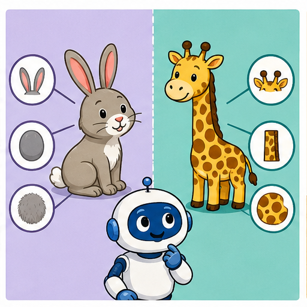
Learner name:
Readiness for the connected explanation
Two annotators agree that a calendar card is ready. What must you still check before treating that label as correct?
This week’s end goal
By the end, I can choose task-relevant features and avoid a clue created after the decision.
Student lesson · 2 of 17
Notice the evidence
PICTURE STORY
Look Closely Before You Explain
Pictures give clues; evidence tells us what the clues mean.

What do you notice?
Name three visible details without explaining them yet.
Circle the detail most connected to the system's decision.
Name one detail that may be decoration or distraction.
Make a first prediction and state the clue that supports it.
My observations, prediction, and evidence:
A closer explanation
Imagine a paper sorting task for a model delivery station. Each rectangular card has a length, width, colour and card number. The station labels a card fits if its length is at most 12 centimetres and its width is at most 8 centimetres. Both limits include equality. Cards stay flat in the marked orientation; turning, bending and thickness are outside this paper task. All measurements in the first examples are known positive whole numbers.
A feature is a recorded input property, such as width in centimetres. The target label is the answer we want to produce: fits or too large under this guide. Decide what the answer means before choosing the inputs. A card number can help us find a record, but knowing its number does not tell us its dimensions.
This guide already gives us a direct rule, so we do not need to train a model to solve it. We use the task to investigate the information that either a rule or a learned model would need. Later, when relationships are learned from examples, the same question remains: did we supply the distinctions the task requires?
Student lesson · 3 of 17
See how it works
VISUAL MECHANISM
Input → Process → Output
Follow the information instead of imagining magic inside the machine.
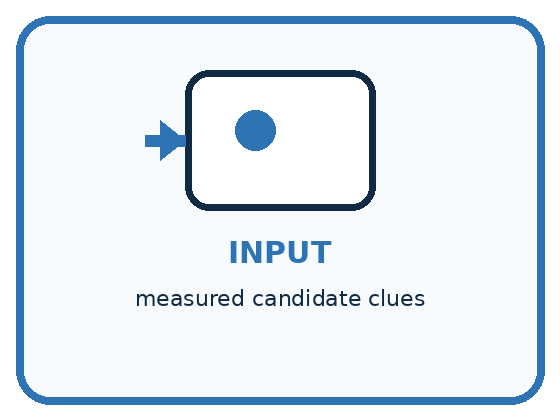
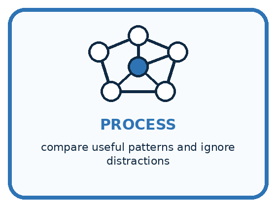
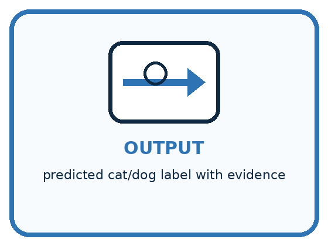
INPUT measured candidate clues
PROCESS compare useful patterns and ignore distractions
OUTPUT predicted cat/dog label with evidence
Draw a fresh example with all three stages:
A closer explanation
Card A is 10 centimetres long and 7 centimetres wide. Card B is 10 centimetres long and 9 centimetres wide. A fits; B is too large because its width exceeds 8. Compare two ways of recording these cards.
The same cards under two feature choices
A system receiving only the length cannot use the hidden width to tell these two cards apart. The same input, 10, is paired with two different correct answers. It may guess, return an uncertainty, or use a usual answer, but length alone cannot guarantee the right label for both. A more complicated model cannot reconstruct this missing distinction with certainty from that input alone.
A feature record needs a consistent order and units. Here we write length in centimetres first, then width in centimetres. The record 10, 7 means something different if someone silently switches the order or records millimetres. Write the definitions alongside the data.
Connect the picture and the explanation
Point to the input, the deciding step and the result in this week’s visual. Explain the same step in ordinary words. A picture helps when you can say what each part represents.
Student lesson · 4 of 17
Compare the cases
PICTURE GALLERY
Four Cases, Four Clues
Use the visual cue, then read the evidence carefully.
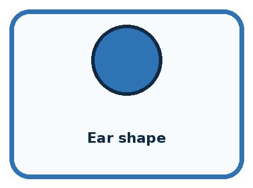
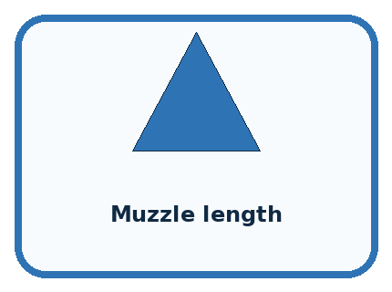
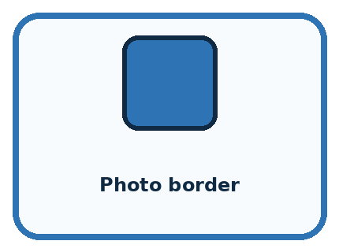
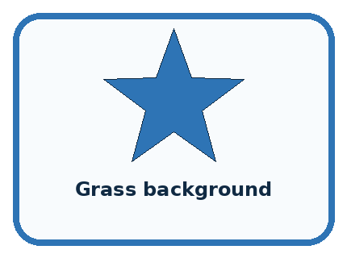
CASE 1 — Ear shape Clue: may differ across many examples. Meaning: potentially useful.
CASE 2 — Muzzle length Clue: observable animal trait. Meaning: potentially useful.
CASE 3 — Photo border Clue: added by the photographer. Meaning: distraction.
CASE 4 — Grass background Clue: accidental setting pattern. Meaning: spurious clue.
Which two pictures are easiest to confuse? What evidence separates them?
Change one thing in the pictured case
Change: Change Q’s width to 6 without changing its height.
Prediction: Q fits the shelf.
Reason: Both dimensions now meet their including equality limits; stripe pattern does not change the rule.
Student lesson · 5 of 17
Words that unlock the idea
VOCABULARY
Words You Can See and Use
The badge is a memory cue; the definition does the real thinking work.
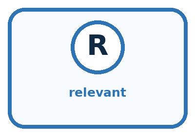
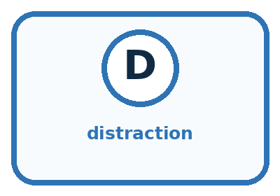
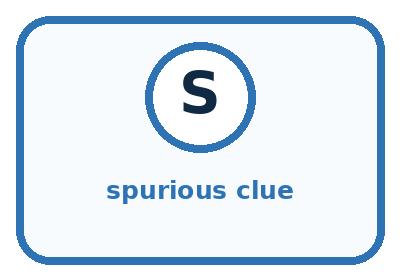
| Word | Meaning | My example |
|---|---|---|
| feature | represented clue used in a decision | |
| relevant | connected to the task goal | |
| distraction | available clue that should not drive the decision | |
| spurious clue | accidental pattern that may fail later |
Misconception detective
CLAIM TO REPAIR Use every available clue because more information is always better.
Use one vocabulary word and one piece of evidence to repair it:
Words used in the closer explanation
| Word | Meaning |
|---|---|
| Target label | The answer a supervised learning task asks a model to predict |
| Feature record | The selected input values for one example, in a defined order |
| Relevant feature | An input property that helps make distinctions needed for the stated task |
| Leakage | Information used during development that would not legitimately be available when making the intended prediction |
Student lesson · 6 of 17
Follow a worked example
WORKED EXAMPLE
Watch the Reasoning, Not Just the Answer
Every step connects a claim to observable evidence.

STEP 1 — OBSERVE measured candidate clues
STEP 2 — TRACE compare useful patterns and ignore distractions
STEP 3 — CONCLUDE predicted cat/dog label with evidence
What new evidence could change this answer?
A closer explanation
| Card measurements and colour | Label under the guide | What the comparison shows |
|---|---|---|
| 10 by 7 cm and blue | Fits | Compare with the next card |
| 10 by 9 cm and blue | Too large | Same length and colour but width changes the label |
| 13 by 7 cm and blue | Too large | Same width and colour as the first card but length changes the label |
| 10 by 7 cm and red | Fits | Changing only colour does not change this guide |
The first two cards show why width matters. The first and third show why length matters. The first and fourth show that colour has no part in this particular rule. That is a statement about our task, not a claim that colour is useless for every task. For sorting red and blue cards, colour would be essential.
Suppose every fitting card in a small practice set is blue and every oversized card is red. Colour would appear to predict the labels perfectly in that set. A red 10 by 7 card and a blue 13 by 7 card expose the shortcut. Check a proposed feature on deliberately different cases before trusting the practice score.
Learn from the worked case
Cover the result before checking it. Say what is given, choose the procedure, and follow one step at a time. Then uncover the result and explain your first mismatch. Ask why a step is allowed, not only what number it produces.
A pictorial worked case: Features: Useful Clues
A fictional shelf accepts a craft box only if width is at most 6 cm and height at most 4 cm.
The facts we will use
Boxes P=(6,4,stripes), Q=(7,4,stripes), R=(6,5,dots), S=(6,4,dots).
A green acceptance sticker is attached only after the shelf check.


Read the picture one step at a time
Why this result follows
Comparing P with Q isolates width; comparing P with R isolates height. Comparing P with S changes pattern while both remain accepted. Under this declared policy, pattern is not a deciding feature. A later acceptance sticker leaks the very answer the system should produce.
What this example does not establish
These comparisons establish the written shelf rule, not the importance of pattern for unrelated tasks.
Read the labelled picture: Point to the pair that tests pattern, then explain why the sticker is a bad early input.
Change one thing: Change Q’s width to 6 without changing its height. Predict the result before checking the explanation. What remains the same?
Student lesson · 7 of 17
Find and repair a mistake
COMPARE
Same Result, Different Reason
A comparison helps reveal the true concept boundary.
| Case | Evidence | What it shows |
|---|---|---|
| Ear shape | may differ across many examples | potentially useful |
| Muzzle length | observable animal trait | potentially useful |
| Photo border | added by the photographer | distraction |
| Grass background | accidental setting pattern | spurious clue |
Repair two tempting claims
CLAIM A Use every available clue because more information is always better.
Repair:
CLAIM B A feature that worked once will always work.
Repair:
A closer explanation
Before adopting a feature set, state the task, name the inputs with units, and ask whether two different answers can share the same input record. Construct such a pair if you can. Then check that each input is available at the time the answer is needed. These checks can reveal a broken representation before any model is trained.
For our known measurements and fixed orientation, length and width are sufficient to apply the paper rule exactly. That does not establish whether a real parcel will fit through a real opening: thickness, shape and measurement error were excluded. If the task changes, review the features again. More columns are not automatically better; each one needs a reason to be collected and used.
Student lesson · 8 of 17
Practise together
GUIDED PRACTICE
Try It, Check It, Explain It
Use support now so you can succeed independently later.

Explain how the picture story demonstrates this idea: Some observable clues help a decision more than others.
Use a fresh example to explain feature.
Trace a new input → process → output example.
Find and repair the error in: A feature that worked once will always work.
Invent one edge case and name the safe response.
A closer explanation
After measuring a card, a teacher adds a sticker saying fits or too large. A learner proposes using sticker text as an input to predict the label before that inspection. The sticker seems excellent in the completed records because it contains the answer. But it does not exist at the time of the intended prediction. This is leakage: development has used information the real task cannot provide.
Draw a line at the moment the system must answer. On the before side, put the permitted measurements available then. On the after side, put the final label sticker. Keep labels available for teaching and checking predictions, but do not feed the sticker back in as an input for this task.
Practise with less help: Prove that one measurement is insufficient
Use workbook W2 for the connected example “Features and useful distinctions”. First fill the input and rule boxes. Try the middle steps before asking for a hint. After a hint, try the next step yourself.
| Plan | Do | Check |
|---|---|---|
| What is given? Which rule or procedure applies? | Record each intermediate step. | Does the result follow? What remains unknown? |
Explain your trace to a partner. Your partner points to one step to check. Swap roles on the next case. Each person writes their own explanation.
Check your reasoning
Use the worked case for Features and useful distinctions. Proposed explanation: “A stronger model can always recover an omitted measurement”. Decide whether this explanation is supported. Point to the step or supplied fact that decides; explain your repair if needed.
Answer on your own before discussion. If you are unsure, say which step you need help with.
Explain the picture
Point to the pair that tests pattern, then explain why the sticker is a bad early input.
This is supported practice. Keep the separately named independent case for an attempt before feedback.
Student lesson · 9 of 17
Run the investigation
EXPLORER LAB
Clue Keep-or-Reject
Predict first, test honestly, and explain what the evidence means.

State your prediction before the result is known.
Complete the task: Choose three clues for cat/dog sorting; reject distractions.
Keep a normal case and an edge case clearly separated.
Record what happened—even when it does not match your prediction.
Explain the result, one limitation, and the next useful test.
| Case | Prediction | Observed result | What it means |
|---|---|---|---|
| Normal | |||
| Edge |
Plan → try → check
Before trying: what do I expect, and why? While trying: which step could first go wrong? Afterwards: what did I actually observe, and what should change? Keep “not run” if you only traced the procedure.
Student lesson · 10 of 17
Build your understanding
PRACTICE LADDER
Climb from Recall to Defense
Each step asks for a stronger kind of understanding.

RECALL Define feature.
EXPLAIN Some observable clues help a decision more than others.
TRACE Show the input, process, and output.
DIAGNOSE Repair: Use every available clue because more information is always better.
TRANSFER Apply the idea to a new home or classroom case.
CREATE Design one revealing test.
DEFEND Give a claim, evidence, mechanism, limit, and safe action.
Student lesson · 11 of 17
Connect your project
PROJECT
Helpful Classroom Sorter
Build one coherent system across the year, one evidence-based decision at a time.

What real classroom need does this serve?
What information is necessary—and what should stay private?
What happens inside the process?
What normal and edge cases will you test?
When should it say not sure or ask a person?

My project decision:
Evidence for your project
Choose sorter features that exist at decision time and actually connect to the stated classroom requirement.
Student lesson · 12 of 17
Show what you know
MASTERY
Fresh-Case Independent Proof
Complete this after teaching and guided practice have ended.

□ Name or draw the fresh case.
□ Trace input, process, and output.
□ State the conclusion and strongest evidence.
□ Name one limit, failure, missing clue, or fairness/privacy concern.
□ Explain one safe next action or improvement.
Independent evidence:
My level: □ Not yet □ With one hint □ Independently □ I can teach it
Student lesson · 13 of 17
Study a complete case
Week 8 Worked case
Use the supplied details to practise the weekly concept before attempting the independent question. This case extends the illustrated lesson.
The situation
Two green leaves have smooth and toothed edges. The task is to distinguish edge types.
The question
Choose the relevant feature and explain why size is insufficient.
Worked explanation
Edge shape directly addresses the target. Size can vary within both categories. Feature usefulness depends on the task.
Explain it in your own words
Which detail supports the answer, and why does it matter?
Trace the supplied case visually
Choose a clue that answers this task
| Evidence or stage | Value or result |
|---|---|
| Target | Smooth versus toothed edge |
| Useful clue | Edge shape |
| Weak clue | Leaf size alone |
Two green leaves have smooth and toothed edges. The task is to distinguish edge types.
Choose the relevant feature and explain why size is insufficient.
Edge shape directly addresses the target. Size can vary within both categories. Feature usefulness depends on the task.
Student lesson · 14 of 17
Try a new case independently
Independent case: Design a record for a new task
A fictional display tray accepts a tile if its height is at most 9 cm and its thickness is at most 2 cm, including equality. Other dimensions are fixed. Before checking, you can record height, thickness and pattern name. A pass sticker is added afterward. Choose inputs with units. Construct two tiles with the same height but different labels. Then label a 9 cm high, 2 cm thick striped tile and explain why the sticker is unsuitable as an input before checking.
Attempt this case before feedback. Record any help. Earlier examples below are further practice; a case already practised with feedback cannot establish fresh transfer.
Week 8 Independent application
Close the worked explanation. Apply the idea to this different question without copying.
A sorter separates round and square tiles. Both shapes come in red and blue. Choose a useful feature and a distracting feature. Test your choice on a blue circle.
My answer, with a trace, calculation or supporting evidence
Create and test
Change one relevant detail. Predict the result before testing. Include a boundary or missing-information case when it helps reveal a limit.
My changed input and expected result
Connect to your project
Select the smallest useful features for lost-and-found sorting and reject clues tied to a particular classroom or owner.
The evidence I will keep
Your teacher has the independent answer and scoring criteria. Complete the matching workbook week to keep your practice evidence together.
Transfer practice from the original programme
A dataset contains only small smooth leaves and large toothed leaves. A model separates them by size. Design two fresh examples that distinguish a size shortcut from an edge-based rule.
Use feedback to improve
Attempt the independent case before hints. Record whether you worked alone, used a hint or followed a model. After feedback, fix the first unsupported step and explain why it changed. A later check uses a changed case, not a copied answer.
Student lesson · 15 of 17
Your lesson route
Start with this question: A fictional shelf accepts a craft box only if width is at most 6 cm and height at most 4 cm.
| By the end, I can | How I will show it |
|---|---|
| Choose recorded properties that preserve distinctions needed for a stated task | Explain the deciding step, show a trace or test, and state one limit. |
| Show why identical feature records can hide examples with different target labels | Explain the deciding step, show a trace or test, and state one limit. |
| Reject an answer copied into the inputs and test a proposed feature with a new case | Explain the deciding step, show a trace or test, and state one limit. |
Remember → watch and explain → try with help → investigate → try independently → keep project evidence. Your teacher may spread this lesson across several classes.
Keep your first prediction. Compare it with what the evidence shows and explain any change.
Student lesson · 16 of 17
Finish and return
Close your notes. Explain this goal in your own words: Choose recorded properties that preserve distinctions needed for a stated task
If you are unsure, return to the worked picture and explain one arrow. If you are ready, change an input or assumption and justify your prediction.
Save your workbook evidence. At the next review, try a different case before opening your old answer.
Student lesson · 17 of 17
Supported practice, repair and portfolio
Use this supported practice once, in the browser or on paper. Keep the reserved independent assessment for a separate first attempt before teacher feedback.
A fictional shelf accepts a craft box only if width is at most 6 cm and height at most 4 cm.
Practice 1: explain the deciding evidence
Which labelled step matches this detail? The later sticker cannot be an input available before checking.
1. Apply both limits
2. Reject a shortcut
3. Height check
4. Width check
Hint if needed: Read the steps in the pictorial case. Match the supplied detail to the stage that performs or records it.
After your attempt, compare with the supported explanation: Reject a shortcut The later sticker cannot be an input available before checking. Comparing P with Q isolates width; comparing P with R isolates height. Comparing P with S changes pattern while both remain accepted. Under this declared policy, pattern is not a deciding feature. A later acceptance sticker leaks the very answer the system should produce.
Practice 2: explain the deciding evidence
Changed-case practice: Change Q’s width to 6 without changing its height. Which conclusion is supported by the supplied facts?
1. We can decide the result without examining the changed input or the procedure.
2. This one example guarantees correct results for every future input.
3. Q fits the shelf.
Hint if needed: Use the changed condition and the deciding step in the pictorial trace. The answer must say what follows from those facts.
After your attempt, compare with the supported explanation: Q fits the shelf. Both dimensions now meet their including equality limits; stripe pattern does not change the rule.
Repair a missing building block
Review Categories and Labels (ai-1/7). Goal: Apply a category definition using explicit evidence and boundary rules. Short practice: Explain why B originally was revise rather than review, then label its changed version.. Return to this week and explain what you changed.
Review Pictures Become Numbers (ai-1/5). Goal: Encode and reconstruct a small image using an explicit grid convention. Short practice: Find a position where the original badges differ, then read the changed A back as a picture.. Return to this week and explain what you changed.
Review Input, Process, Output (ai-1/2). Goal: Trace information through a system without confusing information with a physical action. Short practice: Use the richer record to find blue pencils in Box B. Explain why total alone was insufficient.. Return to this week and explain what you changed.
Keep your completed work
Use Download completed work in the hosted lesson to export your answers, reflections, practice feedback and code-run evidence. Open the HTML copy to read or print it. Drafts stay in this browser when storage is available; clear drafts on a shared device.